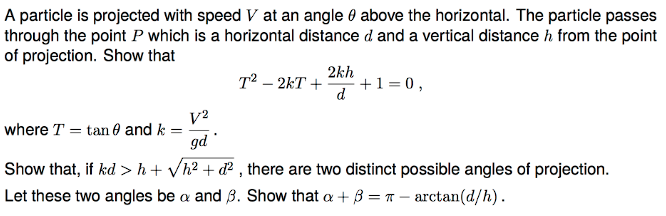
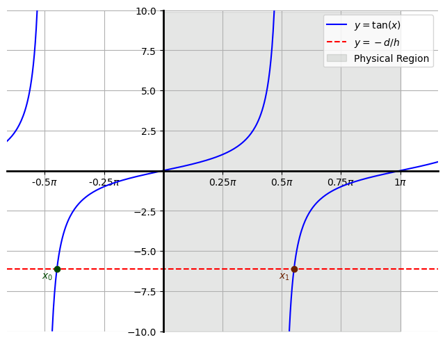

Imports
import numpy as np
import sympy as sp
import matplotlib.pyplot as plt
from matplotlib.animation import FuncAnimation
import matplotlib.patches as patches
from IPython.display import display, Math, Image, HTMLDaniel J Smith
May 9, 2024

I set \(g = 10\text{ms}^{-2}\) when a numeric value is required.
This is Q9 from STEP1 03.
https://stepdatabase.maths.org/database/index.html#
# Define symbolic variables
t, g, V, theta = sp.symbols('t g V theta')
# Symbolic equations for x(t) and y(t)
x_t = V * sp.cos(theta) * t
y_t = V * sp.sin(theta) * t - 0.5 * g * t**2
# Constants and parameters
g_val = 10 # Acceleration due to gravity (m/s^2)
V_val = 30 # Initial velocity in m/s
theta_val = np.radians(70) # Launch angle in radians
# Create lambdified functions for numerical computation
x_num = sp.lambdify((t, V, theta, g), x_t.subs(g, g_val), 'numpy')
y_num = sp.lambdify((t, V, theta, g), y_t.subs(g, g_val), 'numpy')
# Calculate time of flight to the point where y(t)=0 again
t_flight = 2 * V_val * np.sin(theta_val) / g_val
t_points = np.linspace(0, t_flight, num=300)
x_points = x_num(t_points, V_val, theta_val, g_val)
y_points = y_num(t_points, V_val, theta_val, g_val)
# Select a fixed point P on the trajectory at a specific time
t_P = 0.25 * t_flight
d = x_num(t_P, V_val, theta_val, g_val)
h = y_num(t_P, V_val, theta_val, g_val)
# Plotting the trajectory
fig, ax = plt.subplots()
ax.set_aspect('equal')
line, = ax.plot([], [], color = '#bd0019', label='Trajectory', zorder=1)
point, = ax.plot([], [], color='#4f0000', marker='o', zorder=2) # Red point for the particle
fixed_point, = ax.plot([d], [h], color='k', marker='o' , zorder=3)
ax.annotate(r'$P = (d, h)$', (d, h), textcoords="offset points", xytext=(+30,-10), ha='center', color='k')
# Display the projection angle and velocity vector as an arrow
V_scale = 0.3 # Increased scale factor for better visibility
velocity_arrow = ax.arrow(0, 0, V_val * np.cos(theta_val) * V_scale, V_val * np.sin(theta_val) * V_scale,
color='k', head_width=1, head_length=1, length_includes_head=True, alpha=0.6, zorder=4)
# Draw the angle arc
arc = patches.Arc((0, 0), 10, 10, angle=0, theta1=0, theta2=np.degrees(theta_val), color='k', zorder=5)
ax.add_patch(arc)
ax.annotate(r'$\theta$', (5 * np.cos(theta_val / 2), 5 * np.sin(theta_val / 2)), color='k', fontsize=12)
ax.annotate(r'$V$', (V_val * np.cos(theta_val) * V_scale, V_val * np.sin(theta_val) * V_scale),
textcoords="offset points", xytext=(6,-10) , color='k', zorder=6)
ax.set_xlim(0, 65)
ax.set_ylim(0, 45)
ax.set_xlabel('Horizontal distance (m)')
ax.set_ylabel('Vertical distance (m)')
ax.grid(True)
# Function to update the plot
def update(frame):
line.set_data(x_points[:frame], y_points[:frame])
point.set_data([x_points[frame]], [y_points[frame]])
return line, point,
# Create and save the animation as a GIF
ani = FuncAnimation(fig, update, frames=len(t_points), interval=30)
ani.save('gif/trajectory.gif', writer='pillow', fps=30) # Specify writer and fps
plt.close(fig)
# Display the GIF in the notebook
HTML('<img src="gif/trajectory.gif" />')The path of the particle is an inverted parabola. This is a general fact when air resistance is ignored.
Claim:
\[ T^2 -2kT + \frac{2kh}{d} + 1 = 0 \]
where \(T = \tan \theta\) and \(k = \frac{V^2}{gd}\).
Proof.
The idea is to write equations of motion for the \(x\) and \(y\) components of the particle’s position, and combine to eliminate the time \(t\). The claimed quadratic for \(T = \tan \theta\) then follows after grinding out some algebra.
We first use “\(s = ut + \frac{1}{2}at^2\)” in the vertical direction. We have the following variables:
\[ \begin{cases} &\text{initial velocity} = V \sin \theta\\ &\text{displacement} = h\\ &\text{acceleration} = -g\\ &\text{time} = t \end{cases} \] which result in the equation of motion \[h = Vt \sin \theta - \frac{1}{2}gt^2\]
Now we note that the particle is not accelerating in the \(x\)-direction, so all the SUVAT equations are trivial or reduce to “distance = speed \(\times\) time”. Thus the equation of motion in the \(x\)-direction is
\[ d = Vt\cos \theta \]
The particle’s motion is dictated by the pair of equations
\[ \begin{cases} h = Vt \sin \theta - \frac{1}{2}gt^2\\ d = Vt\cos \theta \end{cases} \]
We combine these into a single equation by eliminating the time \(t\). Rearranging the second equation gives:
\[ t = \frac{d}{V\cos\theta} \]
Substituting this into the first equation and simplifying:
\[ \begin{aligned} h &= V\sin\theta \left(\frac{d}{V\cos\theta}\right) - \frac{1}{2}g\left(\frac{d}{V\cos\theta}\right)^2\\ \\ &= d \tan \theta -\frac{gd^2}{2V^2}\,\sec^2\theta\\ \\ &= d \tan \theta -\frac{gd^2}{2V^2}\left(1 + \tan^2 \theta \right) \end{aligned} \]
where we have used \(\tan^2 \theta + 1 \equiv \sec^2 \theta\).
Taking all terms to the left hand side and simplifying further:
\[ \begin{aligned} &\frac{gd^2}{2V^2}\tan^2\theta - d\tan \theta + \frac{gd^2}{2V^2} + h = 0\\ \\ \implies &\tan^2\theta - \frac{2V^2}{gd}\tan\theta + \frac{2hV^2}{gd^2} + 1 = 0\\ \\ \implies & T^2 -2k T + \frac{2hk}{d} + 1 = 0 \end{aligned} \]
as required. \(\square\)
Claim:
If
\[kd > h + \sqrt{h^2 + d^2}\]
then there are two possible angles of projection \(\theta\) whos trajectory passes through the point \(P = (d,h)\).
Proof.
There are two distinct solutions for \(\theta\) if and only if there are two distinct \(\tan\theta\) (since \(\theta\) is acute).
Therefore there are two distinct \(\theta\) if and only if the quadratic
\[ T^2 -2kT + \frac{2kh}{d} + 1 = 0 \]
has two distinct real roots. This occurs if and only if the dicriminant “\(\Delta = b^2 - 4ac\)” is positive, \(\Delta > 0\).
The quadratic has coefficients
\[ \begin{cases} a = 1 \\ b = -2k \\ c = \frac{2kh}{d} + 1 \end{cases} \]
Thus the discriminant \(\Delta\) is
\[ \begin{aligned} \Delta &= (-2k)^2 - 4\left(\frac{2kh}{d} + 1\right)\\ \ &= 4\left(k^2 - \frac{2hk}{d} - 1 \right) \end{aligned} \]
Hence
\[ \begin{aligned} kd > h + \sqrt{h^2 + d^2} &\implies kd - h > \sqrt{h^2 + d^2}\\ \\ &\implies (kd-h)^2 > h^2 + d^2 \\ \\ &\implies k^2d^2 -2kdh + h^2 > h^2 + d^2\\ \\ &\implies k^2d^2 -2kdh - d^2 > 0 \\ \\ &\implies k^2 - \frac{2hk}{d} - 1 > 0 \\ \\ &\implies \Delta > 0 \\ \\ &\implies \text{There are two distinct } \theta. \end{aligned} \]
Which is as required.
Note that it is fine to square both sides of the inequality in the second line above as both sides are positive, and \(x \mapsto x^2\) is strictly increasing on \((0, \infty)\).
\(\square\)
I really feel that there should be an geometric or physical meaning behind the requirement \(kd > h + \sqrt{h^2 + d^2}\) but I haven’t thought of one.
It seems like a weirdly specific form for an inquality that is not used again in the question.
\(\sqrt{h^2 + d^2}\) is the length of the straight line connecting the particle to the origin.
Claim:
Suppose we are in the case \(kd > h + \sqrt{h^2 + d^2}\) as above, and denote by \(\alpha\) and \(\beta\) the two (acute) angles of projection at which a projected particle will pass through the point \(P = (d,h)\). Then
\[ \alpha + \beta = \pi - \arctan \left(\frac{d}{h}\right) \]
Proof.
\(\tan\alpha\) and \(\tan\beta\) can be found by solving the quadratic
\[ T^2 -2kT + \frac{2kh}{d} + 1 = 0 .\]
Use of the quadratic formula gives
\[ T = k \pm \sqrt{k^2 - \frac{2kh}{d} - 1} \]
Therefore
\[ \begin{cases} \tan \alpha = k + \sqrt{k^2 - \frac{2kh}{d} - 1}\\ \\ \tan \beta = k - \sqrt{k^2 - \frac{2kh}{d} - 1} \end{cases} \]
Recall the compound angle formula for \(\tan\)
\[\tan (A + B) = \frac{\tan A + \tan B}{1 - \tan A \tan B} \]
It is immediate that \(\tan \alpha + \tan \beta = 2k\). Meanwhile it is not much harder to compute that
\[ \begin{aligned} \tan \alpha \tan \beta &= \left( k + \sqrt{k^2 - \frac{2kh}{d} - 1} \right) \left( k - \sqrt{k^2 - \frac{2kh}{d} - 1} \right) \\ \\ &= k^2 - \left(k^2 - \frac{2kh}{d} - 1\right) \\ \\ &= \frac{2kh}{d} + 1 \end{aligned} \]
Subsituting these into the compound angle formula gives
\[ \tan (\alpha + \beta) = \frac{2k}{-2kh/d} = -\frac{d}{h}. \]
We have to be careful when taking the inverse tangent here.
Both \(\alpha, \beta \in \left(0, \frac{\pi}{2}\right)\) so \(\alpha + \beta \in (0, \pi)\).
Taking \(\arctan\) of \(-d/h\) will return a negative value for \(\alpha + \beta\), which is unphysical. Thus we must add \(\pi\) to the inverse tangent in order to return the positive, physical value in the correct range corresponding to acute \(\alpha\) and \(\beta\). (See the below graph for an illustration of this).
Hence
\[ \begin{aligned} \alpha + \beta &= \pi + \arctan\left( -\frac{d}{h} \right) \\ \\ &= \pi - \arctan\left( \frac{d}{h} \right) \end{aligned} \]
where in the final line we have used \(\arctan (-x) = - \arctan x\).
\(\square\)
Claim: \[ \arctan (-x) = - \arctan(x) \]
Proof.
Define
\[ f(x) = \arctan (x) + \arctan (-x) \]
It suffices to show \(f\) is equal to zero for all \(x\). Using the chain rule
\[ \begin{aligned} f'(x) &= \frac{1}{1+x^2} + \frac{1}{1+x^2} \frac{\text{d}}{\text{d}x}(-x)\\ &= \frac{1}{1+x^2} - \frac{1}{1+x^2} \\ &= 0 \end{aligned} \]
for all \(x\). So \(f\) must be a constant function, as it has \(f' = 0\) everywhere.
\[ f(x) = C \] for some \(C\in\mathbb{R}\). To find \(C\) simply evaluate \(f\) at zero:
\[ C = \arctan 0 + \arctan (-0) = 2 \arctan 0 = 0 \]
Therefore \(\arctan x + \arctan (-x) = 0\) for all values of \(x\).
\(\square\)
# Constants
c = 6.13
epsilon = 0.1
x_interval_1 = np.linspace(-np.pi-1, -np.pi/2 - epsilon, 200)
x_interval_2 = np.linspace(-np.pi/2 + epsilon, np.pi/2 - epsilon, 200)
x_interval_3 = np.linspace(np.pi/2 + epsilon, np.pi+1, 200)
plt.figure(figsize=(8, 6))
plt.plot(x_interval_1, np.tan(x_interval_1), 'b')
plt.plot(x_interval_2, np.tan(x_interval_2), 'b')
plt.plot(x_interval_3, np.tan(x_interval_3), 'b', label=r'$y = \tan(x)$')
plt.axhline(-c, color='red', linestyle='--', label=r'$y = -d/h$')
ticks = np.arange(-np.pi, np.pi + np.pi/4, step=np.pi/4)
tick_labels = [rf'{n:.2g}$\pi$' if n != 0 else '' for n in ticks/np.pi]
plt.xticks(ticks, tick_labels)
ax = plt.gca()
ax.spines['left'].set_position(('data', 0))
ax.spines['bottom'].set_position(('data', 0))
ax.spines['left'].set_linewidth(2)
ax.spines['bottom'].set_linewidth(2)
ax.spines['right'].set_color('none') # Hide the right spine
ax.spines['top'].set_color('none') # Hide the top spine
ax.xaxis.set_ticks_position('bottom')
ax.yaxis.set_ticks_position('left')
# Eliminate upper and right axes
ax.spines['right'].set_color('none')
ax.spines['top'].set_color('none')
# Show ticks in the left and lower axes only
ax.xaxis.set_ticks_position('bottom')
ax.yaxis.set_ticks_position('left')
# Remove 0.0 y-tick
yticks = ax.get_yticks()
yticks = [ytick for ytick in yticks if ytick != 0.0]
ax.set_yticks(yticks)
# Calculate the x values where y=-c intersects y=tan(x)
x0 = np.arctan(-c)
x1 = x0 + np.pi
# Plot these points
plt.plot(x0, -c, color='#004700', marker='o')
plt.plot(x1, -c, color='#6c2100', marker='o')
# Annotate these points
plt.annotate('$x_0$', (x0, -c), textcoords="offset points", xytext=(-10,-10), ha='center', color='#004700')
plt.annotate('$x_1$', (x1, -c), textcoords="offset points", xytext=(-10,-10), ha='center', color='#6c2100')
# Shade the region 0<=x<=pi with a very low opacity
plt.fill_betweenx(np.arange(-10, 10, 0.1), 0, np.pi, color='#000f00', alpha=0.1, label = r'Physical Region')
plt.ylim(-10, 10)
plt.xlim(-np.pi/2 - 0.5, np.pi + 0.5)
plt.legend(loc='upper right')
plt.grid(True)
plt.show()
In the above graph, the point \(x_0\) corresponds to taking \(\arctan\) of \(-d/h\) without any adjustments. We can see that this would result in \(\alpha + \beta < 0\) and therefore is a non-physical solution. In coordinates \[ x_0 = \left( \arctan\left(-\frac{d}{h}\right), -\frac{d}{h} \right) \]
The point \(x_1\) corresponds to adding \(\pi\) onto \(x_0\). This point is withing the shaded region \(0 < x < \pi\) in which we require \(\alpha + \beta\) to be in if both \(\alpha\) and \(\beta\) are acute. In coordinates \[ x_1 = \left( \pi + \arctan\left(-\frac{d}{h}\right), -\frac{d}{h} \right) \]
Choose
\(\alpha = 30^\circ = \frac{\pi}{6}\)
\(V = 30\text{ms}^{-1}\)
\(g = 10\text{ms}^{-2}\)
The equations of motion of the particle are:
\[ \begin{cases} y(t) = 15t - 5t^2\\ x(t) = 15t\sqrt{3} \end{cases} \]
Rearranging the second for \(t\) and using this to eliminate \(t\) in the first equation results at the cartesian equation of the trajectory of the particle
\[ y(x) = \frac{x}{\sqrt{3}} - \frac{x^2}{135}. \]
If we then choose \(d = 6\sqrt{3}\) then the corresponding \(h\) resulting in a point \(P\) lying on this trajectory can be calculated:
\[ h = y(x=6\sqrt{3}) = 5.2 \]
So we are looking for another angle of projection \(\beta\) that results in a second trajectory also passing through \(P = (6\sqrt{3}, 5.2).\)
V = 30
g = 10
alpha_val = np.radians(30)
d = 12*np.sqrt(3)
h = 8.8
# Define symbolic variables
t, g, V, alpha = sp.symbols('t g V theta')
# Symbolic equations for x(t) and y(t)
x_t = V * sp.cos(alpha) * t
y_t = V * sp.sin(alpha) * t - 0.5 * g * t**2
# Create lambdified functions for numerical computation
x_num = sp.lambdify((t, V, alpha, g), x_t.subs(g, g_val), 'numpy')
y_num = sp.lambdify((t, V, alpha, g), y_t.subs(g, g_val), 'numpy')
# Calculate time of flight to the point where y(t)=0 again
t_flight = 2 * V_val * np.sin(alpha_val) / g_val
t_points = np.linspace(0, t_flight, num=300)
x_points = x_num(t_points, V_val, alpha_val, g_val)
y_points = y_num(t_points, V_val, alpha_val, g_val)
# Plotting the trajectory
fig, ax = plt.subplots()
line, = ax.plot([], [], color= '#bd0019', label=r'$\alpha = 30\degree$', zorder=1)
point, = ax.plot([], [], color='#4f0000', marker='o', zorder=2) # Red point for the particle
fixed_point, = ax.plot([d], [h], color='k', marker='o' , zorder=3)
ax.annotate(r'$P = (6\sqrt{3}, 8.8)$', (d, h), textcoords="offset points", xytext=(+45,-15), ha='center', color='k')
ax.set_xlim(0, 80)
ax.set_ylim(0, 50)
ax.set_xlabel('Horizontal distance (m)')
ax.set_ylabel('Vertical distance (m)')
ax.set_title(r'A single trajectory with $V = 30$ms$^{-1}$ and $\alpha = 30\degree$')
ax.grid(True)
ax.legend()
# Function to update the plot
def update(frame):
line.set_data(x_points[:frame], y_points[:frame])
point.set_data([x_points[frame]], [y_points[frame]])
return line, point,
# Create and save the animation as a GIF
ani = FuncAnimation(fig, update, frames=len(t_points), interval=30)
ani.save('gif/trajectory2.gif', writer='pillow', fps=30) # Specify writer and fps
plt.close(fig)
# Display the GIF in the notebook
HTML('<img src="gif/trajectory2.gif" />')To determine the existence of \(\beta\) we need to verify the inequality \(kd > h + \sqrt{h^2 + d^2}\).
\[ kd = \frac{V^2}{g} = \frac{900}{10} = 90 \]
\[ h + \sqrt{h^2 + d^2} \approx 16.82 \]
The inequality \(kd > h + \sqrt{h^2 + d^2}\) is satisfied so there is another angle of projection \(\beta\) resulting in a trajectory passing through \(P\). In general \(\beta\) is given by the expression
\[ \beta = \pi - \alpha - \arctan\left(\frac{d}{h}\right) \]
In our case we have \(\alpha = \pi / 3\) which leads to \(\beta\) exactly given by
\[ \beta = \frac{5\pi}{6} - \arctan \left(\frac{15\sqrt{3}}{16} \right) \]
and \(\beta\) approximately given by
\[ \begin{aligned} \beta &\approx 1.511 \text{ rad}\\ &\approx 86.57 ^\circ \end{aligned} \]
# Constants
V_val = 30
g_val = 10
alpha_val = np.radians(30)
d = 12 * np.sqrt(3)
h = 8.8
beta_val = np.pi - alpha_val - np.arctan(d / h)
# Define symbolic variables
t, g, V, alpha = sp.symbols('t g V theta')
# Symbolic equations for x(t) and y(t)
x_t = V * sp.cos(alpha) * t
y_t = V * sp.sin(alpha) * t - 0.5 * g * t**2
# Create lambdified functions for numerical computation
x_num = sp.lambdify((t, V, alpha, g), x_t, 'numpy')
y_num = sp.lambdify((t, V, alpha, g), y_t, 'numpy')
# Calculate time of flight for both trajectories
t_flight_alpha = 2 * V_val * np.sin(alpha_val) / g_val
t_flight_beta = 2 * V_val * np.sin(beta_val) / g_val
# Time points for animation
t_points_alpha = np.linspace(0, t_flight_alpha, num=300)
t_points_beta = np.linspace(0, t_flight_beta, num=300)
x_points_alpha = x_num(t_points_alpha, V_val, alpha_val, g_val)
y_points_alpha = y_num(t_points_alpha, V_val, alpha_val, g_val)
x_points_beta = x_num(t_points_beta, V_val, beta_val, g_val)
y_points_beta = y_num(t_points_beta, V_val, beta_val, g_val)
# Plotting the trajectories
fig, ax = plt.subplots()
ax.set_aspect('equal')
# Lines for trajectories
line_alpha, = ax.plot([], [], color = '#bd0019', label=r'$\alpha = 30\degree$', zorder=1)
line_beta, = ax.plot([], [], color='#0380a7', label=r'$\beta \approx 86.6\degree$', zorder=1)
# Points for the particle positions
point_alpha, = ax.plot([], [], color='#4f0000', marker='o', zorder=2) # Red point for the alpha particle
point_beta, = ax.plot([], [], color='#0f7418', marker='o', zorder=2) # Magenta point for the beta particle
fixed_point, = ax.plot([d], [h], color='k', marker='o' , zorder=3)
ax.annotate(r'$P = (6\sqrt{3}, 8.8)$', (d, h), textcoords="offset points", xytext=(+45,-15), ha='center', color='k')
ax.set_xlim(0, 80)
ax.set_ylim(0, 50)
ax.set_xlabel('Horizontal distance (m)')
ax.set_ylabel('Vertical distance (m)')
ax.set_title(r'Two trajectories with $V = 30$ms$^{-1}$ passing through $P$')
ax.grid(True)
ax.legend()
# Function to update the plot
def update(frame):
frame_alpha = min(frame, len(x_points_alpha)-1)
frame_beta = min(frame, len(x_points_beta)-1)
line_alpha.set_data(x_points_alpha[:frame], y_points_alpha[:frame])
point_alpha.set_data([x_points_alpha[frame_alpha]], [y_points_alpha[frame_alpha]])
line_beta.set_data(x_points_beta[:frame], y_points_beta[:frame])
point_beta.set_data([x_points_beta[frame_beta]], [y_points_beta[frame_beta]])
return line_alpha, point_alpha, line_beta, point_beta,
# Create and save the animation as a GIF
ani = FuncAnimation(fig, update, frames=max(len(t_points_alpha), len(t_points_beta)), interval=30)
ani.save('gif/trajectory3.gif', writer='pillow', fps=30) # Specify writer and fps
plt.close(fig)
# Display the GIF in the notebook
HTML('<img src="gif/trajectory3.gif" />')